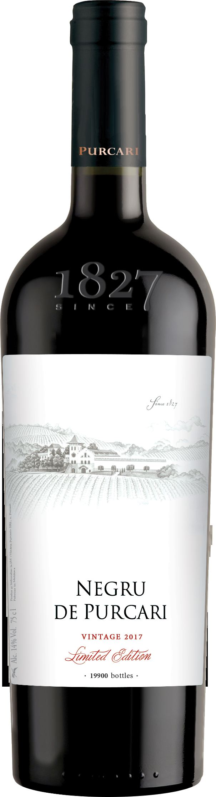

TINTO

Bodega histórica del sureste de Moldavia, fundada en 1827 cerca del río Dniéster, en la zona de Ștefan Vodă, y conocida por su tinto Negru de Purcari.

Purcari se encuentra en el pueblo del mismo nombre, en el distrito de Ștefan Vodă, en el sureste de Moldavia, cerca del río Dniéster y a poca distancia del mar Negro. La bodega fue fundada en 1827, cuando la región, la antigua Besarabia, formaba parte del Imperio ruso, y en sus comienzos contó con la participación de especialistas extranjeros, en particular franceses. Es una de las bodegas más antiguas del país.
Los viñedos de Purcari se sitúan en la indicación geográfica Ștefan Vodă, una de las tres zonas de vino protegidas de Moldavia, apreciada sobre todo por sus tintos. El clima es continental, suavizado por la proximidad del mar Negro y del valle del Dniéster, y los suelos son principalmente de chernozem. Además de variedades internacionales como el Cabernet Sauvignon, el Merlot, el Malbec, la Chardonnay o la Sauvignon Blanc, se cultivan uvas de la tradición local como la Rara Neagră, la Fetească Albă y la Fetească Neagră, y la georgiana Saperavi.
Su vino más célebre es el Negru de Purcari, un tinto de guarda que ensambla Cabernet Sauvignon, Saperavi y Rara Neagră y cuya tradición se remonta al siglo XIX. La gama incluye también el Rosu de Purcari y el Alb de Purcari, así como líneas de vinos varietales. Tras un periodo de declive durante la época soviética, la bodega fue renovada a comienzos del siglo XXI y hoy combina su patrimonio histórico, con un edificio de estilo palaciego, con instalaciones modernas y una oferta de enoturismo.
La bodega recibe visitantes y ofrece recorridos por sus instalaciones históricas, degustaciones y alojamiento; conviene informarse y reservar con antelación.
